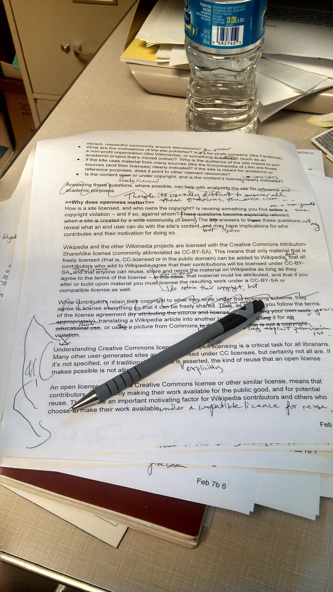

One re-sees the ideas and the structure. One cleans the sentences.
Ideas and structure. The big moves: focus, order, what to cut, what is missing.
Sentences. Clarity and flow, one line at a time.
Errors. Typos, citations, formatting. Last, once the shape is settled.
Focus, organization, evidence, and whether the draft actually answers its question. These come first.
Grammar, citation format, page formatting. Real, but they come after the structure holds.
Why or why not?
A missing recommendation, a repeated paragraph, a Discussion that is only one line. Every draft has gaps.